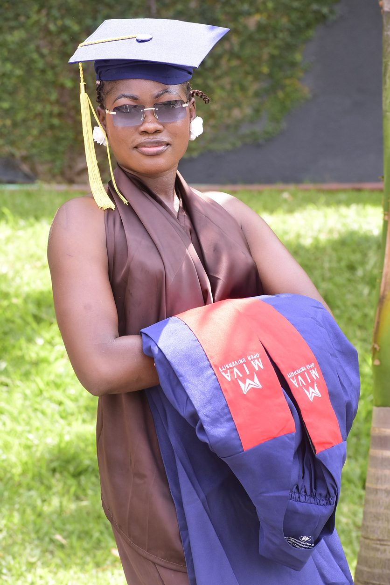
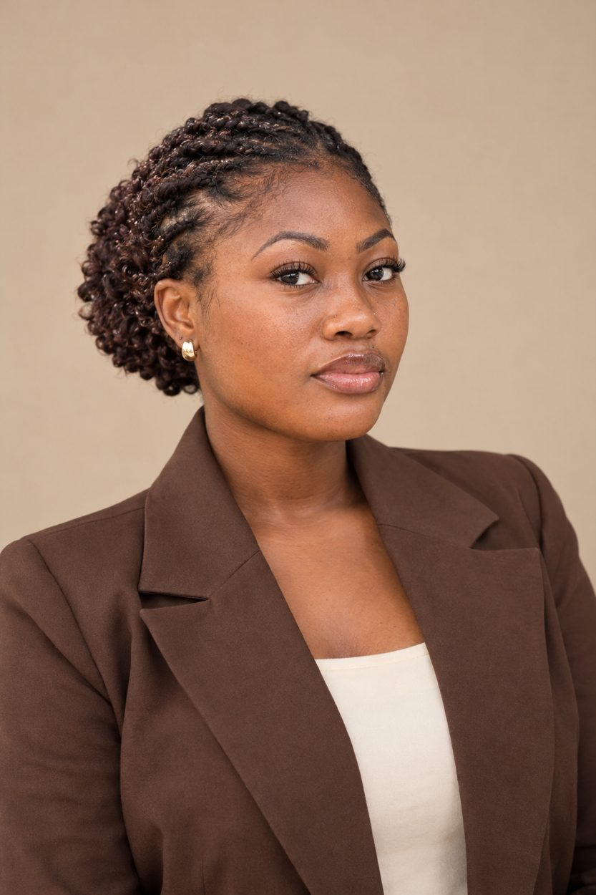
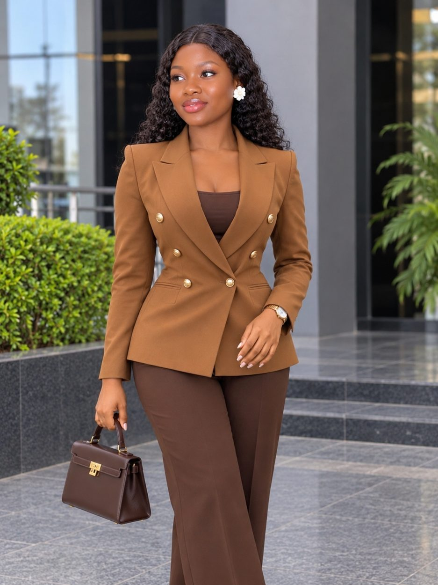
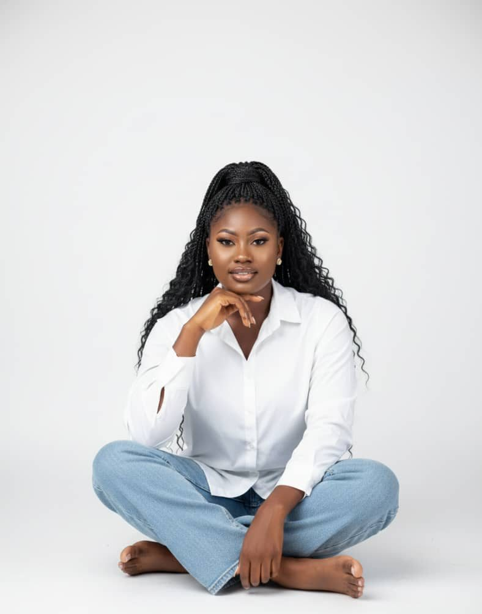

Projects
What I’m working on
A snapshot of my learning so far. More will be added as I grow.
</>
Personal Portfolio Website
A personal portfolio website designed to introduce me, showcase my academic background, highlight my developing technical skills and document my learning journey in Computer Science.
HTML · CSS · JavaScript{ css }
Web Development Practice
A collection of beginner web development exercises demonstrating my learning and practical application of HTML, CSS and JavaScript.
Ongoing practicemain()
Programming Assignments
Selected academic programming exercises completed as part of my Computer Science studies, demonstrating logical thinking, problem-solving and programming fundamentals using C.
C programmingGallery
Moments along the way



